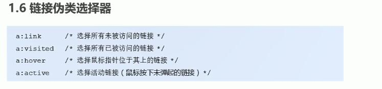
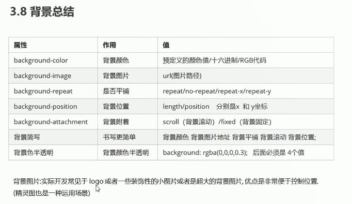
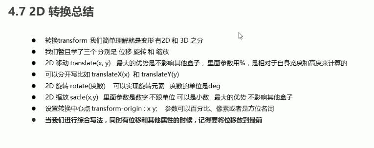

HTML标签 h1-h6 p br 推荐用长的 加粗strong b 斜体em i 删除线del s 下划线ins u div span

图片img:src alt title width height border 调整img标签的位置object-fit object-position
超链接a:href target 同级./或者不写 上../ 下/
表格tabel 表格头部thead 表格主体tbody 表头单元格th 行tr 单元格td:cowspan rowspan
无序列表ul li 有序列表ol li 自定义列表dl dt dd dl包含dt dd
表单form:action method 表单元素input:type(文本text 密码password 单选radio 复选框checkbox 按钮button 提交submit 隐藏hidden 重置reset 滑块range 文件file 图像image) name value checked maxlength disabled 验证规则pattern
单复选框name要一样 label的for与元素的id相同
label:for select下拉列表包含option:selected textarea:rows cols
HTML的字符实体 空格左右书名号 &+nbsp; lt; gt;
其他少用的标签:引用blockquote:cite 短引用q(就加个双引号) 标记文本mark 定义度量衡,仅用于已知最大和最小值的度量meter 进度条progress 显示代码pre
小号文本small 上下标sup/sub optgroup和option搭配 datalist搭配input 画布canvas 引用别的页面iframe map加area可以做点击一个图片的不同位置响应不同内容
source配合audio或者picture track搭配video嵌入字幕 规定默认URL或默认目标base位于head中 注拼音ruby搭配rt abbr缩写
HTML的emoji https://www.runoob.com/charsets/ref-emoji.html
HTML的字符实体 https://www.runoob.com/html/html-entities.html
基础选择器 class. id# 通配符* 标签div
字体font:font-style font-weight font-size line-height font-family

文本颜色color 文本对齐方式text-align 装饰文本text-decoration:style line color 清除默认的文本样式text-decoration:none
首行缩进text-indent 行间距line-height 文字垂直居中用line-height或者padding

文本隐藏text-overflow:ellipsis显示省略号 处理元素内空白white-space:pre
转换文本text-transform:uppearcase lowecase capitalize 字符间距letter-spacing
复合选择器 后代div div 子div>div 并集div,span 伪类:hover 伪类有很多 还有伪元素 擅用这俩可以省去一些js代码
伪类:checked :disabled :empty :not(select) :required :focus :root搭配自定义变量
:invalid :valid :optional :target
相邻兄弟选择器div+p 相邻的下一个兄弟 后续兄弟选择器div~p 后面的所有兄弟 p.marked 所有class="marked"的p元素
块级元素 行内元素 行内块元素 display
display:block -显示块元素的链接 让整体变为可点击链接区域(不只是文本) 它允许我们指定宽度
块级元素主要有: address,blockquote,div,dl,fieldset,form,h, hr,ol,p,pre,table,ul,li
内联元素主要有:a,abbr,b,br,code,em,font,i,img,input,label,q,s ,select,small,span,strong,sub,sup,textarea,u
我们常将所有li元素加上display:inline-block样式，原本垂直的列表就可以水平显示了。
水平显示:flex float inline-block 层叠性 继承性
background:color url() repeat attachment position
border:border-width border-style(有多种样式) border-color border-top:单独设一边
轮廓线outline:none 要设置的话和边框一样写法 outline-offset设置轮廓和边框的距离
border-radius:px/% box-shadow:h-shadow v-shadow blur spread color inset
text-shadow:h-shadow v-shadow blur color
border:1px solid black border-shadow:1px 1px 10px 10px black
padding margin 上右下左 块级盒子margin:auto 如果没有设置 width 属性(或者设置 100%) 居中对齐将不起作用
外边距合并:父子盒子都有margin 脱标(浮动 定位)的盒子不受影响
*{margin:0; padding:0}清除内外边距 list:style type position image 清除li的默认样式list-style:none
float:left
清除浮动:额外标签法 父元素overflow :after伪元素

css属性的书写顺序:布局 自身 文本 其他

定位 position:static relative absolute fixed sticky clip可以裁剪定位的元素
left的优先级比right高 两个同时设置会执行left 不受层叠性的影响
子绝父相 固定定位可以看做是一种特殊的绝对定位
z-index 只有定位的盒子才有 大的优先
display:none block visibility:hidden visible overflow:visible hidden scroll auto
鼠标cursor:default pointer move text not-allowed 防止拖拽文本域resize:none
所有元素都可以加 行内元素垂直对齐vertical-align:baseline top middle bottom谁没对齐给谁加
三角形写法 width:0 height:0 border-color:red transparent transparent transparent border-width:22px 8px 0 0 border-style: solid 没有border-style可能会出错
另一种写法border:1px solid transparent border-top:1px solid red
媒体查询link rel="stylesheet" href="style320.css" media="screen and (min-width: 320px)"
header nav main article section aside footer
视频video:autoplay controls width height loop preload src 海报poster muted
音频audio:autoplay controls loop src
input新类型 tel email url number search color date time month week
表单新属性 min max 必填required 占位placeholder 自动聚焦autofocus 自动补全autocomplete 输入多个值multiple 可以通过input::placeholder{color:pink}来修改颜色 新增选择器


c3盒子模型box-sizing:content-box width+padding+border border-box就是旧的
滤镜filter:blur() calc函数
过度 transtion:要过度的属性 时间 运动曲线 何时开始 谁用过度给谁加
移动 transform:translate(x,y) 不会影响其他元素 对行内无效
旋转 transform:rotate(30deg) transform-origin:x y rotate3d(x,y,z,deg)
缩放 transform:scale(x,y) 同时写要把位移放前面 旋转会改变坐标轴的方向
动画 animation @keyframes定义动画
透视 perspective 写给被观察元素的父元素 3d呈现transform-style:preserve-3d 也是给父元素加
私用前缀 -moz- firefox -ms- ie -webkit- safari chrome -o- Opera 把没有私用前缀写在最后面
视口标签:charset content name
meta name="viewport" content="width=device-width, initial-scale=1.0, maximum-scale=1.0, user-scalable=0"
meta name="viewport" content="width=device-width, initial-scale=1"
边框图片 border-image 背景图片的位置区域background-origin:border-box content-box
渐变百分比位置之间有重叠才失去渐变过渡色 如background: linear-gradient(red 0%, green 50%, blue 50%)
单词拆分 word-break:break-all 允许长文本换行 word-wrap:break-word
把段落的最后一行向右对齐 text-align-last: right;
将文本内容设计成像报纸一样的多列布局 column-count column-gap column-rule-style column-rule-width column-rule-color column-rule column-span column-width
少用!important 优先考虑使用样式的优先级 只有在需要覆盖全站或外部 CSS 的特定页面中使用 永远不要在你的插件中使用